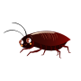
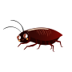

Бородатая агама

Естественной средой обитания необычного по внешнему виду
чешуйчатого пресмыкающегося являются Австралийские полупустынные
зоны, редкие лесистые, а также каменистого типа местности. Большое
количество особей населяет штаты Новый Южный Уэльс и Квинсленд, а
также северо-западную часть штата Виктория, восточную часть Южной
Австралии и юго-восточную Северной Территории.
Бородатая агама предпочитает селиться в засушливых пустынных и
полупустынных биотопах, сухих лесных зонах, каменистых
полупустынях или тенистых кустарниковых зарослях. Животное ведет
наземный или полудревесный образ жизни, и особенно активно только
в дневные часы. Укрытиями для чешуйчатого пресмыкающегося служат
вырытые самостоятельно или другими животными норы, а также
каменистые груды и расщелины, расположенные у корневой системы
растений.

— с 1-6м ежедневно;
— с 6-12м через день;
— от 12м 2-3 раза в неделю.
Корм нужно давать только утром и днем. В вечернее время кормление не рекомендуется.
 
